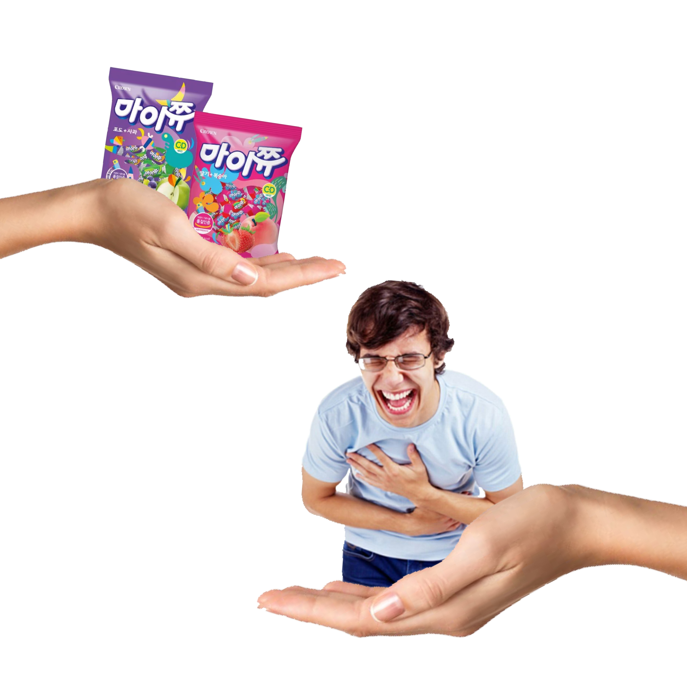

제주 출신인 나는 육지에 올라온 후로 사투리를 의식하게 되었던 계기가 있다.
이는 바야흐로 중3 처음 기숙학원에서 육지친구들을 만났을 때이다.
(제주도 사투리는 존댓말을 쓸 땐 비교적 별로 안쓰게 되지만, 반말을 하게 될 때면 나도 모르게 튀어나오기 쉽상이다.)
내가 사투리를 쓰고 있음을 제대로 느낀순간은 그 때가 처음이었고 잊혀지지가 않는다.
* 먹젠-> 먹을래
이 말을 뱉은 후, 주위 친구들은 모두 나를 외계인 보듯 신기하게 보고 나는 얼굴이 붉어지기 시작했다..
(마이쮸 주고 조롱 받기..)
16년 인생 이제껏 육지 사람들과 대화할 기회도 없었고, 제주도는 억양이 거의 없기 때문에 내가 사투리를 쓰고 있다는 것을
인지하지 못하고 있었기 때문이다. 사투리를 쓴다는 것은 부끄러운 일이 아니지만, 처음 느껴보는 반응에 놀라 그 다음 부터는 말을 할 때 조금 신경쓰이게 되었다.
20살, 서울 친구에게 내가 겪었던 이야기를 풀어낼 때, 대충 “가이가~했다”라는 등의 말을 하고 있었다.
충격적인건 내 말을 들은 친구가‘가이’(-> ‘걔’라는 뜻)가 아닌 ‘가희’라는 이름을 가진 아이에 대한 얘기를 하는줄
알고 있었다는 점이었다.
이 때, 나는 ‘가이’가 사투리라는 것을 처음 알았다.
* ‘가이’와 비슷한 단어로는 자이->쟤 / 야이->얘
모르고 썼다가 의외로 사투리라 놀랐던 몇가지를 말하자면,
| 쪽잡하다 | 좁다 | 단어자체가 비좁은 느낌이라 사투리라고 의심조차 못했음 |
|---|---|---|
| 으까 | 어른이 아이의 손을 잡고 일어나게 하면서 내는 소리 | 이 단어를 사용할 때는 음이 중요함. (음 내리며)으 - (음 올리며)까 |
| 똥새기 | 똥강아지 | “어유 저 똥새기”처럼 사용하는 단어로 살짝의 애정이 들어간 욕아닌듯 욕이랄까,,, 이건 표준어로 어떻게 표현해야될지 감도 안옴 |
| 택배를 부르다 |
택배를 시키다 | 사투린거 알고나서 생각해보니 지역상 남쪽에 위치해서 그런가,,, 싶기도 함 |
그래도 4년간의 서울살이를 통해 사투리가 많이 고쳐졌다. 편한 친구들에게는 무의식 중에 나오긴하지만, 예전처럼 수치심을 느끼진 않는다. 하지만 일일이 해석해서 말해줘야하는 것이 귀찮아 최대한 안쓰려고 노력하는 중이다. ^____^